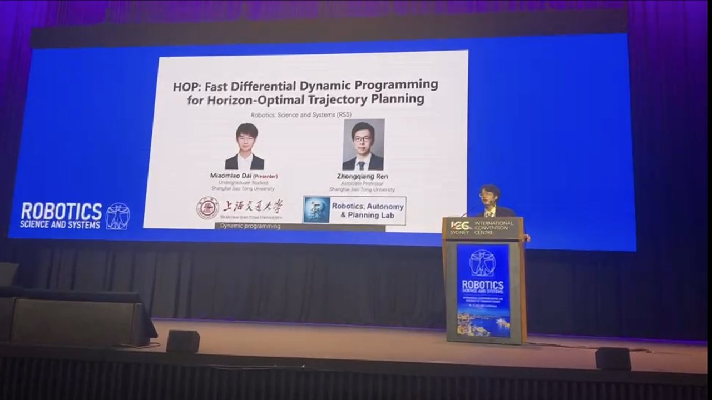

- Home首页
- Publications论文
- HOP
HOP: Fast Differential Dynamic Programming for Horizon-Optimal Trajectory Planning
Miaomiao Dai, Zhongqiang Ren
Undergraduate first author · presented the talk本科生第一作者 · 本人作大会报告

The horizon is part of the problem视界本身就是问题的一部分
A trajectory optimizer is usually handed three things: a system, a cost, and a duration. The first two are genuinely part of the problem. The third — how many timesteps the motion should take — is almost always a number someone tuned by hand until the results looked reasonable.
轨迹优化器通常拿到三样东西：一个系统、一个代价函数、一个时长。前两者确实属于问题本身；第三个——这段运动该走多少步——却几乎总是有人手工调到看起来合理为止。
That matters more than it sounds. Pick a horizon that is too short and the task is infeasible. Too long and the robot dawdles, and the solver spends its effort on timesteps that do nothing. The standard fix is to try many horizons and keep the best, which means solving the whole problem once per candidate.
这件事比听上去要紧。视界取短了任务不可行；取长了机器人磨蹭，求解器还要把力气花在什么都不做的时间步上。标准做法是多试几个视界取最好的，也就是每换一个候选就把整个问题重解一遍。
Scoring every horizon at once一次性评估所有候选视界
The contribution of this paper is a closed-form result: the cost of every candidate horizon can be recovered from a single backward pass, rather than one solve per candidate. Because the intermediate value functions a DDP sweep already computes carry the information needed to evaluate stopping at each step, the search collapses from quadratic to linear in the number of candidates.
本文的贡献是一个闭式结果：所有候选视界的代价都能从单次反向扫描中恢复，而不必逐个求解。因为 DDP 扫描本身已经算出的中间值函数，恰好携带了在每一步停止所需的信息，视界搜索因此从平方降到线性。
In practice this is up to 40× faster than brute-force horizon search, and it returns the same selected horizon and the same cost — it is an exact acceleration, not an approximation.
实测比暴力视界搜索快至多 40 倍，并且返回相同的选定视界与相同的代价——这是精确加速，不是近似。
What comes next接下来
HOP assumes an unconstrained problem. Most useful robots are not unconstrained: they have joint limits, actuator saturation, and obstacles to avoid. AL-HOP extends the same one-sweep idea to hard state and control constraints through an augmented-Lagrangian formulation, and is currently under review.
HOP 假设问题无约束，而大多数有用的机器人并非如此：它们有关节限位、执行器饱和、需要避开的障碍。AL-HOP 用增广拉格朗日形式把同样的单次扫描思想推广到硬状态与控制约束，目前在审稿中。
Cite
@inproceedings{dai2026hop,
title = {HOP: Fast Differential Dynamic Programming for
Horizon-Optimal Trajectory Planning},
author = {Dai, Miaomiao and Ren, Zhongqiang},
booktitle = {Robotics: Science and Systems (RSS)},
year = {2026}
}